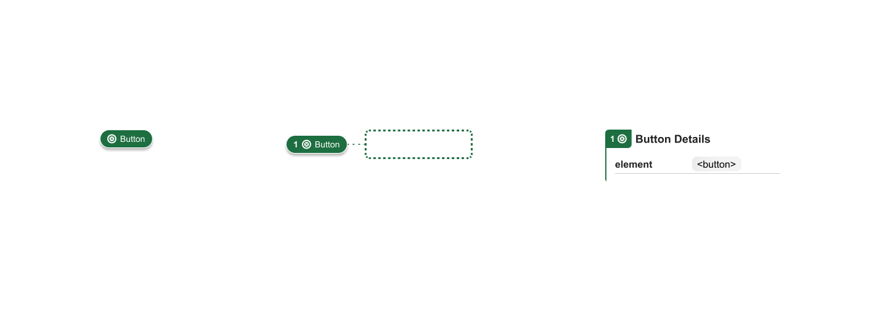

Background
The Problem
With only two accessibility design specialists supporting over 40 UX designers, we needed to figure out how to ensure all designs could get annotated before going to development. Annotations implemented incorrectly can cause more problems than they solve — so it wasn't enough to hand designers a kit and hope for the best.
The constraint
2 accessibility specialists. 40+ UX designers. Every design needed annotations before development. The math didn't work without scaling designer capability directly.
I wanted to make sure our annotation kit was genuinely easy to use, and that designers had the tools to know exactly how to implement annotations — not just what annotations are.
Research
Exploration & Discovery
Competitive Analysis
I knew the Verily Annotation Kit needed a refresh, so I looked at how other companies were handling annotations. I explored kits from Indeed, the VA, and individually published kits on the Figma Community — including the CVS Annotation Kit, which I had contributed to in a previous role.
My prior experience with the CVS kit gave me useful context, but I was careful not to let familiarity substitute for evaluation. The competitive analysis helped me understand which annotation elements were most important, how use cases were documented, and how teams were customizing the CVS kit as a base.
My team ultimately decided to use the CVS kit as our foundation — it had already solved for reducing clutter, adding detail, and Figma library integration, and its architecture made customization straightforward.
User Research
Before touching the kit, I needed to understand designers' real workflows. I ran sessions with UX designers across teams to observe how they organized Figma files, how they moved through a design, and how — or if — they were doing annotations. I made sure to include designers at every experience level.
"Everyone was at a different level, and nobody felt comfortable doing annotations on their own."
Even the most accessibility-fluent designers were missing key steps. This told me something important: the gap wasn't just knowledge — it was the absence of a clear, standardized process that met people where they were.
Key insight
The CVS Annotation Kit was built for accessibility experts. Verily needed something that could onboard designers at every level — without requiring prior accessibility experience to use it effectively.
Design Process
Annotation Kit
Selecting components
The CVS kit was a strong starting point, but not every component made sense for Verily. Where Verily's design system already covered accessibility details — like input fields — I removed redundant annotation components to reduce noise. Where context still mattered even for design-system components (like buttons, which always need a clear accessible name), I kept them.
I also added components specific to our needs, including language and title annotations to ensure every annotated screen captured those additional details.

Iterating in the wild
The first launch was primarily web-focused, but designed to stretch to mobile. Once a project came in to redesign the VerilyMe mobile app, I built a new annotation component for swipe groups — meeting with mobile developers, accessibility engineers, and my mobile accessibility mentor to define the right variables.
I aligned the terminology with what engineers had already learned for accessibility, using name, role, and value as the structure for detail sections.
Each quarter, I reviewed annotations from designers and tracked recurring patterns in note annotations. Rather than leaving designers to reinvent the wheel, I added note templates directly to the kit — for things like default focus order, data visualization requirements, and reflow and zoom guidance.
Launched core kit components focused on web, with mobile-compatible options included from the start.
Built swipe group annotations for VerilyMe, grounded in real developer and engineer input.
Identified recurring annotation patterns and converted them into reusable templates — reducing duplication and improving consistency.
Design Process
Decision Trees
From documentation to in-workflow tools
While I developed the annotation kit, a teammate was building documentation in Confluence. But user research had already surfaced a problem: designers rarely used Confluence, even for resources that had been well-socialized. When they did, it was a one-time read — not an ongoing reference.
"Anything outside of Figma felt like an extra step taking them away from their workflow."
When I showed designers the Confluence documentation, they thought it would be useful for deep learning — but not for their active annotation work. They needed something faster and closer to where the work was happening.
Taking inspiration from user flows, I created annotation decision trees: Figma-native, component-level guides that designers could reference — and paste directly into their design files — while annotating.
Iterating toward clarity
My first decision tree was large and complex, easy to get lost in. Early testing made the problem immediately clear. I broke it down first into three trees (by annotation strategy), then ultimately into one tree per component.
Why component-level trees worked
Smaller trees were less intimidating and easy to skim. They were small enough to embed directly in design files. And because they were scoped to a single component, designers could skip entire trees that didn't apply — significantly reducing cognitive load.
In the final iteration, a content designer reviewed the trees and cut them nearly in half — tightening the language without losing any guidance. That collaboration was a turning point in making the trees genuinely usable.
Outcomes
Results
The most fulfilling part of this project was watching designers gain the autonomy to complete annotations on their own. Feedback across the team confirmed that the decision trees were genuinely useful — not just as a reference, but as a training tool.
"This is the tool I wish I had when I was learning how to annotate."
When I started at Verily, only a handful of designers had ever annotated their designs, and none of them were confident doing it alone. A year later, all 20+ designers I support are annotating independently. I review every set of annotations — and some have come back from development testing with zero bugs.
To move beyond anecdotal evidence, I'm currently using Jira dashboards to track the impact of annotations on accessibility compliance at Verily, measuring where gaps remain and where the kit can improve further.